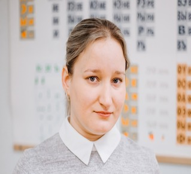
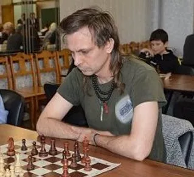

Тренера
Главная страница
Наши тренера
Расписание
Наши Тренера.

ЧЕРНОЗЕМОВА (Николаева) АЛЕКСАНДРА ВЛАДИМИРОВНА.
Мастер Фиде. Двухкратная чемпионка области среди женщин в 2004 и 2005 годы. Опыт работы 15 лет.

Спирин Игорь Александрович.
КМС. Победитель и призер многих российских и международных соревнований. Тренер по шахматам 1 категории. Среди учеников чемпионы и призеры Первенств Самарской области.
Коновалов Вячеслав Николаевич
КМС. Спортивный судья всероссийской категории. Опыт работы более 31 года. Среди учеников чемпионы и призеры международных турниров.